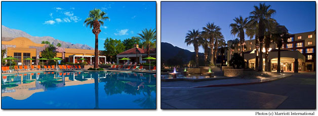

HCOMP 2013
Conference on Human Computation & Crowdsourcing
November 6-9, 2013 - Palm Springs, California USA
CFP | Committee | Program | Workshops & Tutorials | Online Proceedings | Mtg photos | Hotel Information | Registration | Sponsorship | Past Meetings
 Photo courtesy of Palm Springs Bureau of Tourism
Photo courtesy of Palm Springs Bureau of Tourism
The First AAAI Conference on Human Computation and Crowdsourcing (HCOMP-2013) will be held November 6-9, 2013 in Palm Springs, California, USA.
HCOMP is aimed at promoting the scientific exchange of advances in human computation and crowdsourcing among researchers, engineers, and practitioners across a spectrum of disciplines. The conference was created by researchers from diverse fields to serve as a key focal point and scholarly venue for the review and presentation of the highest quality work on principles, studies, and applications of human computation. The meeting seeks and embraces work on human computation and crowdsourcing in multiple fields, including human-computer interaction, cognitive psychology, economics, information retrieval, economics, databases, systems, optimization, and multiple subdisciplines of artificial intelligence, such as vision, speech, robotics, machine learning, and planning.
Submissions are invited on efforts and developments on principles, experiments, and implementations of systems that rely on programmatic access to human intellect to perform some aspect of computation, or where human perception, knowledge, reasoning, or physical activity and coordination contributes to the operation of larger computational systems, applications, and services. The conference will include presentations of new research, works-in-progress and demo sessions, and invited talks. A day of workshops and tutorials will follow the main conference. Submissions to the main conference will be due on May 10, 2013. Authors will be notified about the acceptance and rejection of paper submissions on July 16, 2013. Accepted papers will be due in camera-ready form on September 4, 2013. A complete set of deadlines and notification dates for workshops, tutorials, works-in-progress and demonstrations can be found on the right.
HCOMP 2013 builds on a series of four successful earlier workshops (2009,2010,2011,2012). All full papers accepted at this first conference will be published as AAAI archival proceedings in the AAAI digital library. While we encourage visionary and forward-looking papers, please only submit your best novel work; the paper track will not accept work recently published or soon to be published in another conference or journal. However, to encourage exchange of ideas, such work can be submitted to the non-archival work-in-progress and demo track. For submissions of this kind, the authors should include the venue of previous or concurrent publication.
Several HCOMP workshops will take place on Saturday, November 9. HCOMP will also include a two-day CrowdCamp to turn crowdsourcing ideas into concrete prototypes, organized by Lydia Chilton (UW). CrowdCamp will bracket the HCOMP meeting with Day 1 on Wednesday, November 6 and Day 2 on Saturday, November 9.
The preface to the HCOMP-13 proceedings provides an overview of the history, goals, and peer review procedures of the conference. Additional background on the founding of the conference are discussed in this Computing Research News story.
Where
Renaissance Palm Springs Hotel
Palm Springs, California
When
November 6-9, 2013
Important Dates
All deadlines are 5pm Pacific time unless otherwise noted.
Papers
Submission deadline: May 10, 2013
Author rebuttal period: June 21-28
Notification: July 16, 2013
Camera Ready: September 4, 2013
Workshops & Tutorials
Proposal deadline: May 10, 2013
Notification: July 16, 2013
Camera Ready: October 15, 2013
Works-in-Progress & Demonstrations
Submission deadline: July 25, 2013
Notification: August 26, 2013
Camera Ready: September 4, 2013
Submissions
To submit your work, use the HCOMP 2013 Electronic Submission Site, (cmt.research.microsoft.com/HCOMP2013/).
Paper Format: AAAI, up to 8 pages. Paper submissions are blind - please anonymize your submissions.
Works-in-progress, demonstrations, workshops and tutorials: AAAI, up to 2 pages, plus supplemental material. These submissions do not have to be anonymized.
Follow
@hcomp2013, FB Group.Conference Chairs | |
| Björn Hartmann (UC Berkeley) | Eric Horvitz (Microsoft Research) |
Sponsorship Chair | Workshop and Tutorials Chair |
| Michael Kearns (UPenn) | Aditya Parameswaran (Stanford) |
Works in Progress | Best Paper Committee Chair |
| Jeff Bigham (CMU) | Loren Terveen (University of Minnesota) |
Microtalk Chairs | |
| Shaili Jain (Microsoft) | Walter Lasecki (CMU) |
Program Committee | |
| Paul Bennett (Microsoft Research) | Michael Bernstein (Stanford) |
| Jeff Bigham (University of Rochester) | Yiling Chen (Harvard) |
| Ed Chi (Google) | Lydia Chilton (University of Washington) |
| Janis Dickinson (Cornell) | Michael Franklin (UC Berkeley) |
| Krzysztof Gajos (Harvard) | Hector Garcia-Molina (Stanford) |
| Jeff Heer (University of Washington) | Haym Hirsch (Rutgers) |
| Panagiotis Ipeirotis (NYU) | Adam Kalai (Microsoft Research) |
| Ece Kamar (Microsoft Research) | Henry Kautz (University of Rochester) |
| Andreas Krause (ETH Zurich) | Edith Law (Harvard University) |
| Chris Lintott (Oxford) | Greg Little (oDesk) |
| Mausam (University of Washington) | Robert Miller (MIT) |
| Jeff Nichols (IBM) | David Parkes (Harvard) |
| Adam Sadilek (University of Rochester) | Arfon Smith (Adler Planetarium) |
| Siddharth Suri (Microsoft Research) | Loren Terveen (University of Minnesota) |
| Adrien Treuille (CMU) | Daniel Weld (University of Washington) |
| Haoqi Zhang (Northwestern) | |
HCOMP 2013 sponsors
We gratefully acknowledge the enthusiasm and finanical support provided by our sponsors:
HCOMP Proceedings
HCOMP-2013 Proceedings and Adjunct Proceedings available via AAAI's open-access archive.
HCOMP 2013 Program
Wednesday, 11/6
CrowdCamp Day 1
(by invitation)
6-8pm Opening Reception
In addition to the official program, there will also be a number of unofficial interest group meetings that are open to HCOMP attendees.
Thursday, 11/7
8:45am-9am Chairs' Welcome
9am-10:30am Papers 1: Space and Time
nEmesis: Which Restaurants Should You Avoid Today?
Adam Sadilek (Google, USA); Sean Brennan, Henry Kautz, and Vincent Silenzio (University of Rochester, USA)
Notable Paper Award
What Will Others Choose? How a Majority Vote Reward Scheme Can Improve Human Computation in a Spatial Location Identification Task
Huaming Rao (Nanjing University of Science & Technology, China & University of Illinois at Urbana-Champaign, USA); Shih-Wen Huang and Wai-Tat Fu (University of Illinois at Urbana-Champaign, USA)
Why Stop Now? Predicting Worker Engagement in Online Crowdsourcing
Andrew Mao (Harvard University, USA); Ece Kamar and Eric Horvitz (Microsoft Research, USA)
Crowdsourcing Spatial Phenomena Using Trust-Based Heteroskedastic Gaussian Processes
Matteo Venanzi, Alex Rogers, and Nicholas R. Jennings (University of Southampton, UK)
Improving Your Chances: Boosting Citizen Science Discovery
Yexiang Xue, Bistra Dilkina, Theodoros Damoulas, Daniel Fink, Carla P. Gomes, and Steve Kelling (Cornell University, USA)
10:30am-11am Break
11am-12:30pm Papers 2: Methods and Principles
Depth-Workload Tradeoffs for Workforce Organization
Hoda Heidari and Michael Kearns (University of Pennsylvania, USA)
On the Verification Complexity of Group Decision-Making Tasks
Ofra Amir (Harvard University, USA); Yuval Shahar, Ya’akov Gal, and Litan Ilany (Ben-Gurion University of the Negev, Israel)
Winner-Take-All Crowdsourcing Contests with Stochastic Production
Ruggiero Cavallo and Shaili Jain (Microsoft Research, USA)
DataSift: An Expressive and Accurate Crowd-Powered Search Toolkit
Aditya Parameswaran, Ming Han Teh, Hector Garcia-Molina, Jennifer Widom (Stanford University, USA)
The Crowd-Median Algorithm
Hannes Heikinheimo (Rovio Entertainment Ltd, Finland) and Antti Ukkonen (Aalto University, Finland)
12:30pm-2pm Lunch break
2pm-3:30pm Papers 3: Communities, Creativity, Design
Community Clustering: Leveraging an Academic Crowd to Form Coherent Conference Sessions
Paul André (Carnegie Mellon University, USA), Haoqi Zhang (Northwestern University, USA), Juho Kim (MIT CSAIL, USA), Lydia Chilton (University of Washington, USA), Steven P. Dow (Carnegie Mellon University, USA), and Robert C. Miller (MIT CSAIL, USA)
Notable Paper Award
Crowdsourcing Multi-Label Classification for Taxonomy Creation
Jonathan Bragg, Mausam, and Daniel S. Weld (University of Washington, USA)
Best Paper Award
SQUARE: A Benchmark for Research on Computing Crowd Consensus
Aashish Sheshadri and Matthew Lease (The University of Texas at Austin, USA)
99designs: An Analysis of Creative Competition in Crowdsourced Design
Ricardo Matsumura Araujo (Federal University of Pelotas, Brazil)
CrowdBand: An Automated Crowdsourcing Sound Composition System
Mary Pietrowicz, Danish Chopra, Amin Sadeghi, Puneet Chandra, Brian P. Bailey, and Karrie Karahalios (University of Illinois, USA)
3:30pm-4pm Break
4pm-5pm Keynote: Jon Kleinberg (Cornell)
Steering the Crowd: Rewards and Incentives for Collective Behavior
5pm-5:45pm Madness: HCOMP Microtalks
5:45pm-7:45pm Evening reception with posters and demonstrations
Friday, 11/8
9am-10am Keynote: Zoran Popovic (University of Washington)
Rapid Development of World-Class Expertise and School Mastery
10am-10:30am Morning Break
10:30am-12pm Papers 4: Incentives and Preferences
Incentives for Privacy Tradeoff in Community Sensing
Adish Singla and Andreas Krause (ETH Zurich, Switzerland)
Volunteering Versus Work for Pay: Incentives and Tradeoffs in Crowdsourcing
Andrew Mao (Harvard University, USA), Ece Kamar (Microsoft Research, USA), Yiling Chen (Harvard University, USA), Eric Horvitz (Microsoft Research, USA), Megan E. Schwamb (ASIAA, Taiwan & Yale Center for Astronomy & Astrophysics, USA), Chris J. Lintott (University of Oxford, UK & Adler Planetarium, USA), and Arfon M. Smith (Adler Planetarium, USA)
Inferring Users’ Preferences from Crowdsourced Pairwise Comparisons: A Matrix Completion Approach
Jinfeng Yi and Rong Jin (Michigan State University, USA), Shaili Jain (Microsoft, USA), and Anil K. Jain (Michigan State University, USA)
Dwelling on the Negative: Incentivizing Effort in Peer Prediction
Jens Witkowski (Albert-Ludwigs-Universität, Germany), Yoram Bachrach (Microsoft Research, UK), Peter Key (Microsoft Research, UK), and David C. Parkes (Harvard University, USA)
Scalable Preference Aggregation in Social Networks
Swapnil Dhamal and Y. Narahari (Indian Institute of Science, India)
12pm-1:30pm Lunch Break
Unofficial Event: Journal meeting
1pm-3pm Poster Session #2
(starts during lunch)
3pm-4pm Panel Discussion
Research and Research Platforms: On Needs, Dreams, and Directions
Panelists: Adam Bradley (Amazon Mechanical Turk), Edith Law (Harvard University), Anand Kulkarni (MobileWorks), Greg Little, Rob Miller (MIT), and Dan Weld (University of Washington). Moderator: Bjoern Hartmann
4pm-4:30pm Afternoon Break
4:30pm-6pm Papers 5: Teams, Machines, and Collaboration
Leveraging Collaboration: A Methodology for the Design of Social Problem-Solving Systems
Lucas M. Tabajara, Marcelo O.R. Prates, Diego V. Noble, and Luis C. Lamb (Federal University of Rio Grande do Sul, Brazil)
Ability Grouping of Crowd Workers via Reward Discrimination
Yuko Sakurai (Kyushu University and JST PRESTO, Japan), Tenda Okimoto (Transdisciplinary Research Integration Center, Japan), Masaaki Oka (Kyushu University, Japan), Masato Shinoda (Nara Women’s University, Japan), and Makoto Yokoo (Kyushu University, Japan)
Interpretation of Crowdsourced Activities Using Provenance Network Analysis
T. D. Huynh (University of Southampton, UK), M. Ebden (University of Oxford, UK), M. Venanzi (University of Southampton, UK), S. Ramchurn (University of Southampton, UK), S. Roberts (University of Oxford, UK), L. Moreau (University of Southampton, UK)
CASTLE: Crowd-Assisted System for Text Labeling and Extraction
Sean Goldberg and Daisy Zhe Wang (University of Florida, USA), Tim Kraska (Brown University, USA)
Crowdsourcing a HIT: Measuring Workers’ Pre-Task Interactions on Microtask Markets
Jason T. Jacques and Per Ola Kristensson (University of St Andrews, UK)
6pm-6:30pm HCOMP Business Meeting
6:45pm-9pm Citizen Science Gathering
6:45pm Unofficial Event: Social Hour
Saturday, 11/9: HCOMP 2013 Workshops & Tutorials
Workshops
- W1: Crowdsourcing at Scale (Full Day)
- W2: Human and Machine Learning in Games (Full Day)
- W3: Scaling Speech, Language Understanding and Dialogue through Crowdsourcing (Half-Day, PM)
Tutorial
- T1: Incentives in Human Computation (Half-Day, AM) - Arpita Ghosh (Cornell University)
CrowdCamp Day 2
(by invitation)
5pm - 6pm Wrap Up Session
Final plenary session with brief reports from CrowdCamp and the Workshops (Madera Ballroom)
Accepted Demonstrations
Wanted: More Nails for the Hammer, An Investigation into the Application of Human Computation
Elizabeth Brem, Tyler Bick, Andrew Schriner, Daniel Oerther
Frenzy: A Platform for Friendsourcing
Lydia B. Chilton, Felicia Cordeiro, Daniel S. Weld, James A. Landay
The Work Exchange: Peer-to-Peer Enterprise Crowdsourcing
Stephen Dill, Robert Kern, Erika Flint, Melissa Cefkin
In-HIT Example-Guided Annotation Aid for Crowdsourcing UI Components
Yi-Ching Huang, Chun-I Wang, Shih-Yuan Yu, Jane Yung-jen Hsu
Crowdsourcing Objective Answers to Subjective Questions Online
Ravi Iyer
Automating Crowdsourcing Tasks in an Industrial Environment
Vasilis Kandylas, Omar Alonso, Shiroy Choksey, Kedar Rudre, Prashant Jaiswal
Cobi: Community-Informed Conference Scheduling
Juho Kim, Haoqi Zhang, Paul André, Lydia B. Chilton, Anant Bhardwaj, David Karger, Steven P. Dow, Robert C. Miller
Curio: A Platform for Supporting Mixed-Expertise Crowdsourcing
Edith Law, Conner Dalton, Nick Merrill, Albert Young, Krzysztof Z. Gajos
Real-Time Drawing Assistance through Crowdsourcing
Alex Limpaecher, Nicolas Feltman, Adrien Treuille, Michael Cohen
An Introduction to the Zooniverse
Arfon M. Smith, Stuart Lynn, Chris J. Lintott
Accepted Works-in-Progress
A Human-Centered Framework for Ensuring Reliability on Crowdsourced Labeling Tasks
Omar Alonso, Catherine C. Marshall, Marc Najork
Making Crowdwork Work: Issues in Crowdsourcing for Organizations
Obinna Anya, Melissa Cefkin, Steve Dill, Robert Moore, Susan Stucky, Osarieme Omokaro
Using Crowdsourcing to Generate an Evaluation Dataset for Name Matching Technologies
Alya Asarina, Olga Simek
Statistical Quality Estimation for General Crowdsourcing Tasks
Yukino Baba, Hisashi Kashima
Crowdsourcing Translation by Leveraging Tournament Selection and Lattice-Based String Alignment
Julien Bourdaillet, Shourya Roy, Gueyoung Jung, Yu-An Sun
Lottery-Based Payment Mechanism for Microtasks
L. Elisa Celis, Shourya Roy, Vivek Mishra
OnDroad Planner: Building Tourist Plans Using Traveling Social Network Information
Isabel Cenamor, Tomás de la Rosa, Daniel Borrajo
Using Human and Machine Processing in Recommendation Systems
Eric Colson
LabelBoost: An Ensemble Model for Ground Truth Inference Using Boosted Trees
Siamak Faridani, Georg Buscher
A Ground Truth Inference Model for Ordinal Crowd-Sourced Labels Using Hard Assignment Expectation Maximization
Siamak Faridani, Georg Buscher, Ya Xu
Frequency and Duration of Self-Initiated Task-Switching in an Online Investigation of Interrupted Performance
Sandy J. J. Gould, Anna L. Cox, Duncan P. Brumby
Assessing the Viability of Online Interruption Studies
Sandy J. J. Gould, Anna L. Cox, Duncan P. Brumby, Sarah Wiseman
Human Stigmergy in Augmented Environments
Kshanti Greene, Thomas Young
Reducing Error in Context-Sensitive Crowdsourced Tasks
Daniel Haas, Matthew Greenstein, Kainar Kamalov, Adam Marcus, Marek Olszewski, Marc Piette
Transcribing and Annotating Speech Corpora for Speech Recognition: A Three-Step Crowdsourcing Approach with Quality Control
Annika Hämäläinen, Fernando Pinto Moreira, Jairo Avelar, Daniela Braga, Miguel Sales Dias
An Initial Study of Automatic Curb Ramp Detection with Crowdsourced Verification Using Google Street View Images
Kotaro Hara, Jin Sun, Jonah Chazan, David Jacobs, Jon E. Froehlich
Effect of Task Presentation on the Performance of Crowd Workers — A Cognitive Study
Harini Sampath, Rajeev Rajeshuni, Bipin Indurkhya, Saraschandra Karanam, Koustuv Dasgupta
English to Hindi Translation Protocols for an Enterprise Crowd
Srinivasan Iyengar, Shirish Karande, Sachin Lodha
Joint Crowdsourcing of Multiple Tasks
Andrey Kolobov, Mausam, Daniel S. Weld
GameLab: A Tool Suit to Support Designers of Systems with Homo Ludens in the Loop
Markus Krause
Automated Support for Collective Memory of Conversational Interactions
Walter S. Lasecki, Jeffrey P. Bigham
Using Visibility to Control Collective Attention in Crowdsourcing
Kristina Lerman, Tad Hogg
Manipulating Social Roles in a Tagging Environment
Mieke H.R. Leyssen, Jacco van Ossenbruggen, Arjen P. de Vries, Lynda Hardman
Towards a Language for Non-Expert Specification of POMDPs for Crowdsourcing
Christopher H. Lin, Mausam, Daniel S. Weld
Two Methods for Measuring Question Difficulty and Discrimination in Incomplete Crowdsourced Data
Sarah K. K. Luger, Jeff Bowles
Crowd, the Teaching Assistant: Educational Assessment Crowdsourcing
Pallavi Manohar, Shourya Roy
Crowdsourcing Quality Control for Item Ordering Tasks
Toshiko Matsui, Yukino Baba, Toshihiro Kamishima, Hisashi Kashima
Ontology Quality Assurance with the Crowd
Jonathan M. Mortensen, Mark A. Musen, Natalya F. Noy
Personalized Human Computation
Peter Organisciak, Jaime Teevan, Susan Dumais, Robert C. Miller, Adam Tauman Kalai
EM-Based Inference of True Labels Using Confidence Judgments
Satoshi Oyama, Yuko Sakurai, Yukino Baba, Hisashi Kashima
Task Redundancy Strategy Based on Volunteers’ Credibility for Volunteer Thinking Projects
Lesandro Ponciano, Francisco Brasileiro, Guilherme Gadelha
Inserting Micro-Breaks into Crowdsourcing Workflows
Jeffrey M. Rzeszotarski, Ed Chi, Praveen Paritosh, Peng Dai
HiveMind: Tuning Crowd Response with a Single Value
Preetjot Singh, Walter S. Lasecki, Paulo Barelli, Jeffrey P. Bigham
Aggregating Human-Expert Opinions for Multi-Label Classification
Evgueni Smirnov, Hua Zhang, Ralf Peeters, Nikolay Nikolaev, Maike Imkamp
Herding the Crowd: Automated Planning for Crowdsourced Planning
Kartik Talamadupula, Subbarao Kambhampati, Yuheng Hu, Tuan Nguyen, Hankz Hankui Zhuo
Designing a Crowdsourcing Tool to Analyze Relationships among Jazz Musicians: The Case of Linked Jazz 52nd Street
Hilary K. Thorsen, M. Cristina Pattuelli
A Framework for Adaptive Crowd Query Processing
Beth Trushkowsky, Tim Kraska, Michael J. Franklin
Understanding Potential Microtask Workers for Paid Crowdsourcing
Ming-Hung Wang, Kuan-Ta Chen, Shuo-Yang Wang, Chin-Laung Lei
Boosting OCR Accuracy Using Crowdsourcing
Shuo-Yang Wang, Ming-Hung Wang, Kuan-Ta Chen
TrailView: Combining Gamification and Social Network Voting Mechanisms for Useful Data Collection
Michael Weingert, Kate Larson
Task Sequence Design: Evidence on Price and Difficulty
Ming Yin, Yiling Chen, Yu-An Sun
Hotel Information

AAAI has reserved a block of rooms at the Renaissance Palm Springs Hotel at reduced conference rates. Space is limited. (Information about discounted student accommodations at the Renaissance is available by writing to hcomp13students@aaai.org. Proof of full-time student status required.)
Renaissance Palm Springs
888 Tahquitz Canyon Way
Palm Springs, California 92262 USA
www.marriott.com/hotels/travel/pspbr-renaissance-palm-springs-hotel/
Worldwide Reservations: 1-888-682-1238
Reservations by telephone: 1-760-322-6000
Refer to group name "AAAI" or "HCOMP" when making phone reservations.
Hotel Website and Online Reservations: Book your group rate: HCOMP-13 Attendees
Conference Rates available 11/06/2013 - 11/10/2013
Single/Double Occupancy: $150.00
Check-in time: 4:00 pm
Check-out time: 12:00 pm
Cut-off date for conference rate reservations: 5:00 PM local hotel time (PDT), Monday, October 7, 2013
Reservation requests received after the cut-off date will be based on availability at the Hotel's prevailing rates. Reservations should be made directly with the Renaissance Palm Springs through one of the methods listed above. Rate is per room, per night, excluding applicable state and local taxes. Rates include complimentary wireless Internet access in guest sleeping rooms.
Rooms must be guaranteed by a major credit card. Cancellations made within 24 hours of arrival will forfeit one night's room and tax.
Parking
Onsite self parking is available at $10 per day. Valet Parking is available for $20 per day.
Additional Hotel Information
The Renaissance Palm Springs Hotel in located at the foot of the San Jacinto Mountains, and within a few block of the main downtown area. The hotel is situated with easy access to the Aerial Tram and other Palm Springs attractions (see www.marriott.com/hotels/local-things-to-do/pspbr-renaissance-palm-springs-hotel/).
Airports / Transportation
Palm Springs can be accessed via the Palm Springs International Airport (PSP, 1.5 miles), Ontario International Airport (ONT, 70 miles), or Los Angeles International Airport (LAX, 124 Miles). The Renaissance Hotel provides complimentary shuttle service to the Palm Springs airport, and taxis from/to PSP are approximately $7.00 each way. If flying into Ontario or LAX, a rental car is recommended. There is limited shuttle service from Ontario and LAX to Palm Springs via Super Shuttle or other shuttles serving the Palm Springs area. Prices range from $75-125 one-way. For more information on van service, please refer to the airport websites' ground transportation options.
Disclaimer
In offering the Renaissance Palm Springs Hotel, Palm Springs International Airport, Ontario International Airport, and Los Angeles International Airport, and all other service providers (hereinafter referred to as "Supplier(s)" for the AAAI Conference on Human Computation and Crowdsourcing, AAAI acts only in the capacity of agent for the Suppliers that are the providers of the service. Because AAAI has no control over the personnel, equipment or operations or providers of accommodations or other services included as part of the HCOMP-13 program, AAAI assumes no responsibility for and will not be liable for any personal delay, inconveniences or other damage suffered by conference participants which may arise by reason of (1) any wrongful or negligent acts or omissions on the part of any Supplier or its employees, (2) any defect in or failure of any vehicle, equipment or instrumentality owned, operated or otherwise used by any Supplier, or (3) any wrongful or negligent acts or omissions on the part of any other party not under the control, direct or otherwise, of AAAI.
Registration
To register, please use the HCOMP-13 online registration form at https://www.regonline.com/hcomp13.
PREREGISTRATION IS ENCOURAGED. The HCOMP-13 technical conference registration fee includes admission to all technical paper and poster sessions, invited talks, the opening reception, and an electronic copy of the HCOMP-13 Conference Proceedings. Technical registrants also receive a discount on attendance at the workshop and tutorial program on Saturday, November 9.
Registration Fees
| Technical Program Only (November 6-8) | |||
| Early (by Sept 20) |
Late (by Oct 11) |
Onsite (after Oct 11) |
|
| Member | $400 | $500 | $600 |
| Student Member | $225 | $325 | $425 |
| Nonmember | $565 | $665 | $765 |
| Student Nonmember | $320 | $420 | $520 |
Platinum Rates (Includes one-year new or renewal membership in AAAI) | |||
| Early (by Sept 20) |
Late (by Oct 11) |
Onsite (after Oct 11) |
|
| Regular | $545 | $645 | $745 |
| Student | $300 | $400 | $500 |
Workshop/Tutorial Registration
The HCOMP-13 Workshop/Tutorial fee includes admittance to the workshop/tutorial program on Saturday, November 9, and any accompanying electronic materials. Technical registrants are eligible for a discounted rate. See the tutorial and workshop descriptions above.
| Workshop/Tutorial Day with Technical Registration | |
| Regular | $85 |
| Student | $60 |
Workshop/Tutorial Day Only Registration The Workshop/Tutorial Only fee does NOT include admittance to any HCOMP-13 technical session or reception. Registration is valid only for the day of the workshops/tutorials. | |
| Regular | $135 |
| Student | $85 |
CrowdCamp Registration The HCOMP-13 CrowdCamp fee includes admittance to the CrowdCamp program on Wednesday, November 6 and Saturday, November 9. | |
| Regular | $195 |
| Student | $120 |
Opening Reception
Admittance to the HCOMP-13 Opening Reception (November 6) is included in the HCOMP-13 technical conference registration. Guests are welcome for the following fee:
Opening Reception Guest: $70
2013 HCOMP Proceedings
A hard copy of the HCOMP-13 proceedings may be purchased at the pre-publication price of $30.00 during the preregistration period. (Shipping is additional and will be calculated at the time of shipment after the conference.)
Payment Information
Payment of registration fees is required at the time of registration. Checks or international money orders must be in US dollars and should be made out to AAAI. American Express, MasterCard, and VISA are also accepted. Registration applications must be submitted online by the registration deadlines to qualify for reduced rates. If you qualify for student rates, please submit your proof of student status to AAAI by email attachment to hcomp13@aaai.org or by fax to +1-650-321-4457.
Refund Requests
The deadline for refund requests is October 18, 2013. No refunds will be granted after this date. All refund requests must be made in writing to hcomp13@aaai.org. A $100.00 processing fee will be assessed for all refunds.
Visa Information
If you require a letter of invitation, please send the following information to hcomp13@aaai.org:
First/Given Name:
Family/Last Name:
Position:
Organization:
Department:
City:
Zip/Postal Code:
Email:
Are you an author of a paper?
Are you presenting at a workshop?
Paper title:
Workshop name/paper title:
Email address where the letter should be sent:
Passport Number/Date of Birth (if required):
Onsite Registration
Onsite registration will be held in the ballroom foyer of the Renaissance Palm Springs Hotel, 888 Tahquitz Canyon Way, Palm Springs, California 92262 USA. All attendees must pick up their registration packets for admittance to programs. Registration hours will be Wednesday, November 6, 8:00 am - 5:00 pm; Thursday - Friday, November 7-8, 8:00 am - 5:00 pm; Saturday, November 9, 8:30 am - 12:00 pm.
For Questions, contact:HCOMP-13 Registration
AAAI
2275 East Bayshore Road, Suite 160
Palo Alto, CA 94303
+1-650-328-3123
hcomp13@aaai.org
Contact: hcomp13@aaai.org
Past Meetings
- HCOMP 2012, Toronto Canada (co-located with AAAI)
- HCOMP 2011, San Francisco, CA (co-located with AAAI)
- HCOMP 2010, Washington, DC (co-located with KDD 2010)
- HCOMP 2009, Paris, France (co-located with KDD 2009)